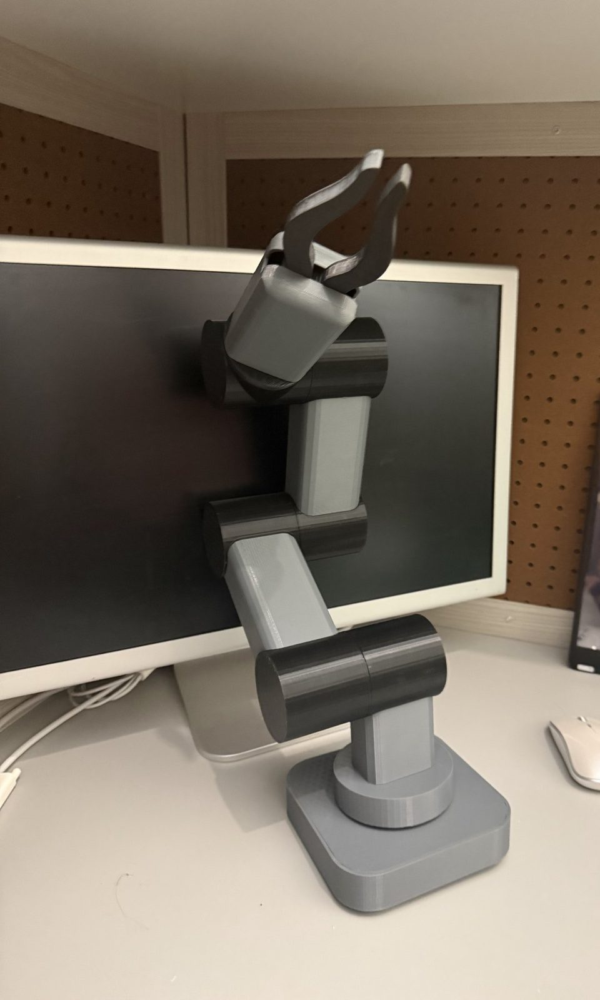
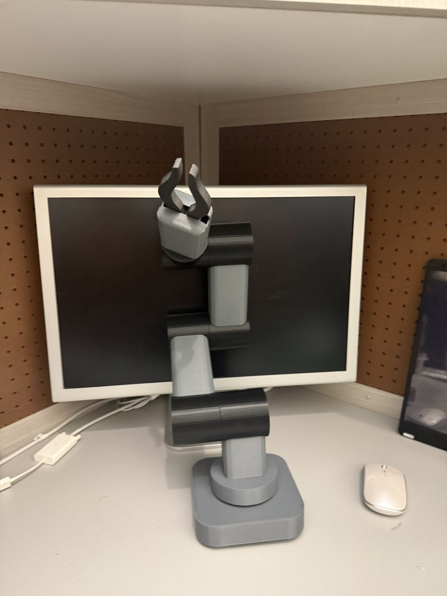
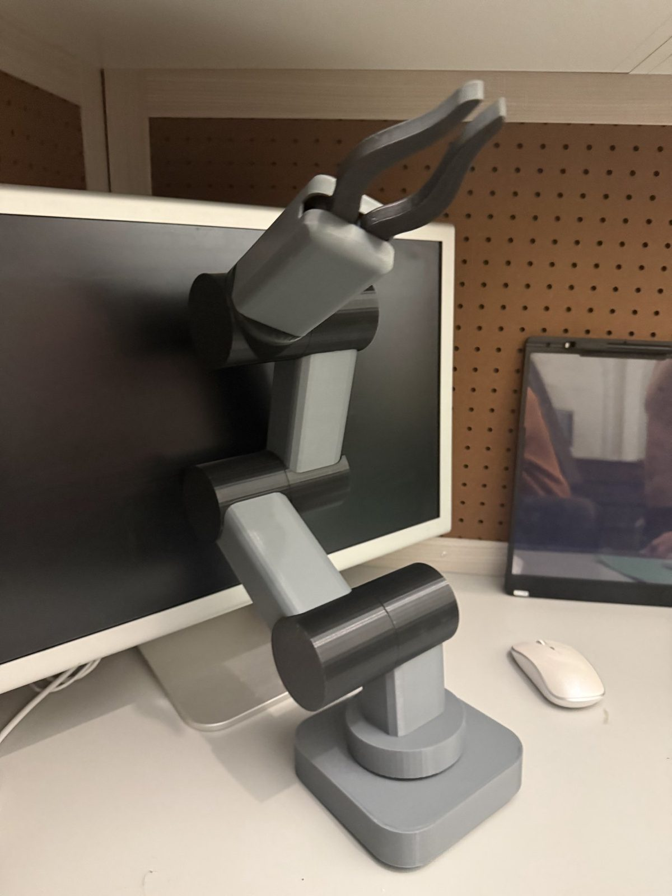
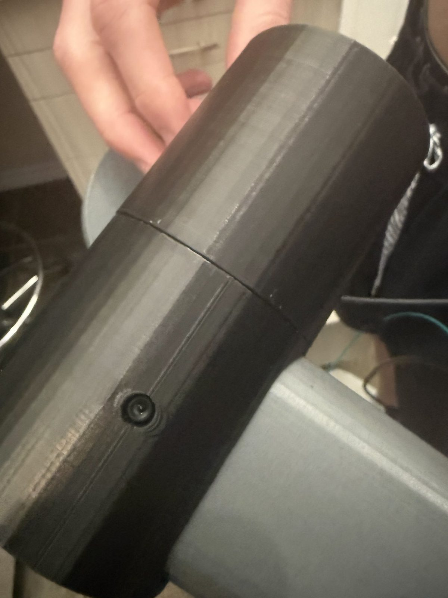
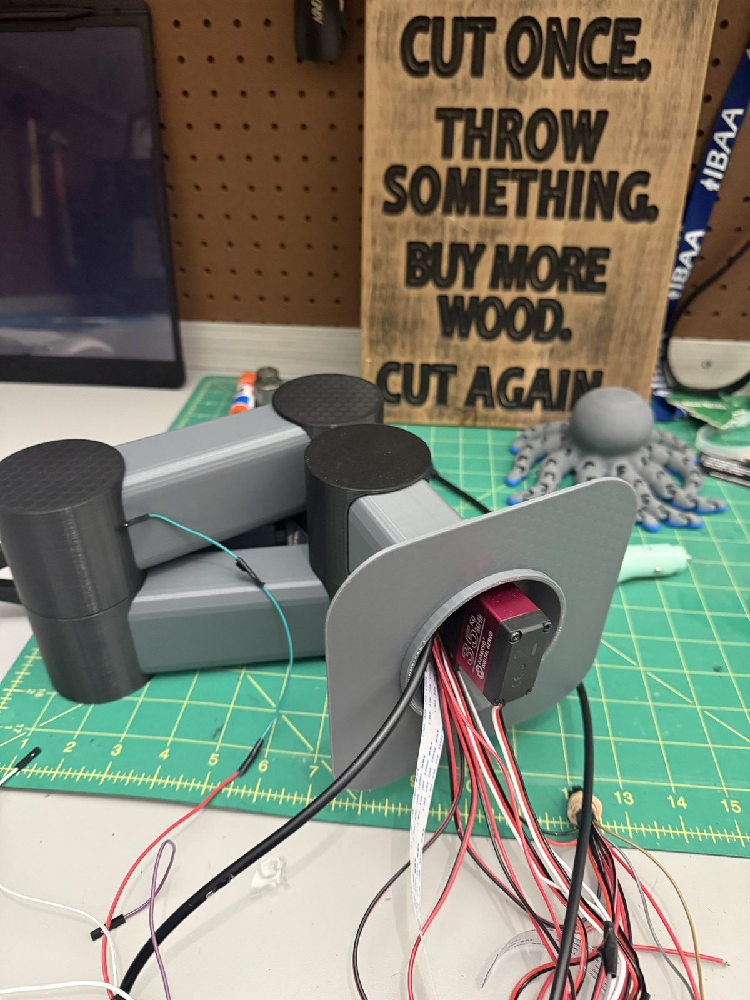
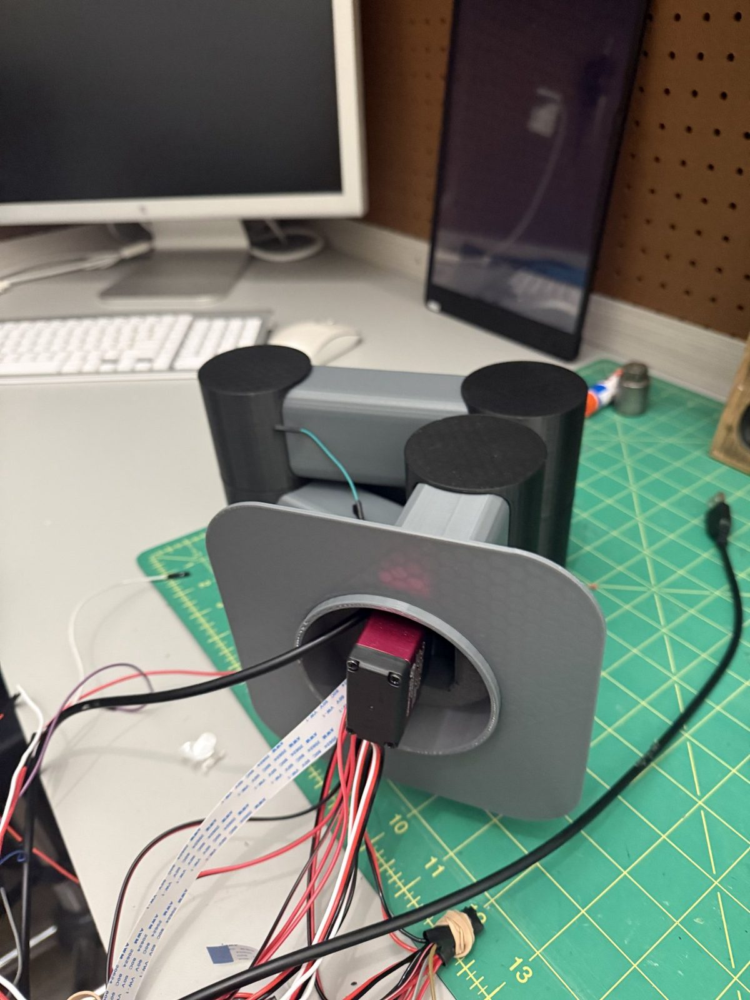
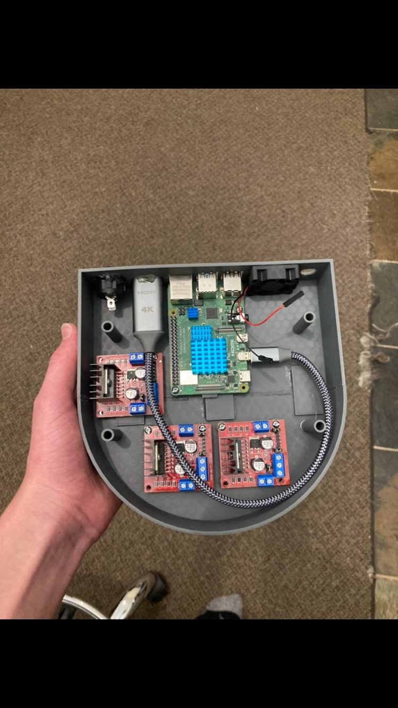
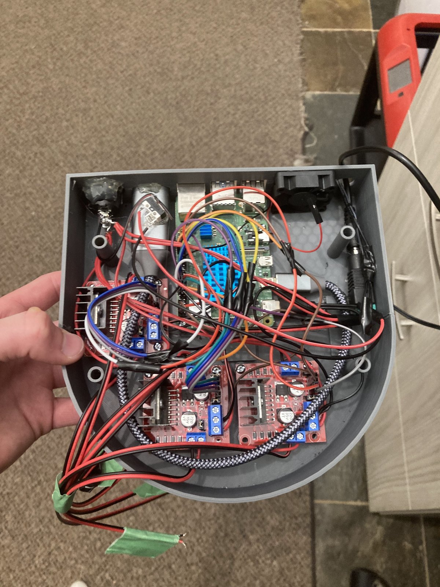
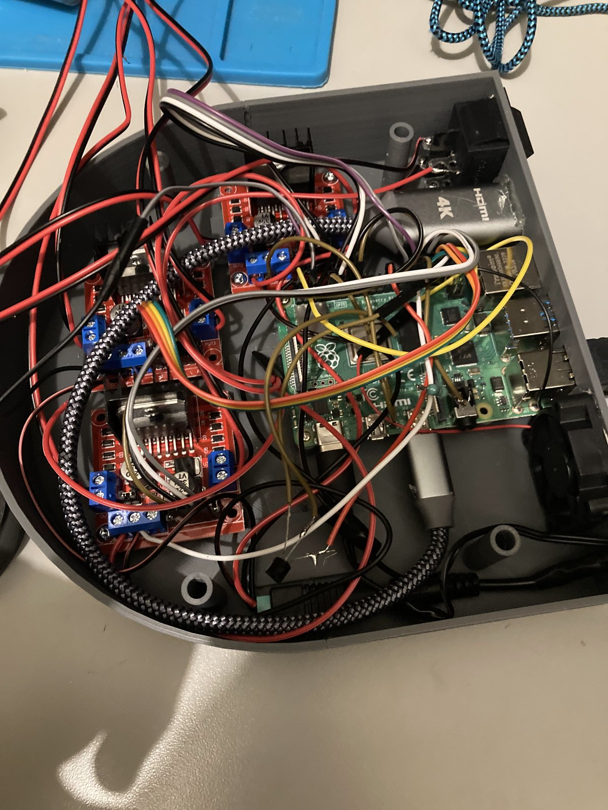

Robotic Arm
My most recent project is a robotic arm that can see, listen and talk back. I designed and 3D-printed the body and claw myself, and it runs on a Raspberry Pi that I programmed to recognise faces, respond to voice commands and answer out loud. Servo motors move the joints.
- Started
- 2024 · age 15
- Controller
- Raspberry Pi
- Senses
- Camera · microphone
- Status
- Working · still developing

What it can do
- SeeA camera lets it recognise faces.
- ListenA microphone picks up voice commands.
- TalkA speaker lets it talk back.
- MoveServo motors drive the joints and the claw.
- ThinkA Raspberry Pi runs the program I wrote for it.
Why a robotic arm
My earlier projects were mostly mechanical. A robotic arm let me combine mechanical design and 3D printing with programming, and build something that could react to people: see who’s there, listen and answer.
A custom 3D-printed body
I designed the body and claw myself and 3D-printed them. The arm is made of grey and black printed segments on a square base, with round housings at the joints where the servo motors sit, and a two-finger claw at the top.





Earlier electronics · Jun 2024
An earlier stage of the electronics: a Raspberry Pi and motor-driver boards mounted in a 3D-printed base.



The arm has a rotating base, then shoulder, elbow and wrist joints, each inside one of the round black housings, and a two-finger claw at the end. The earlier electronics base from 2024 was the first stage of the project, before I moved to servo motors.
Camera, microphone, speaker and servos
A Raspberry Pi is the brain of the arm. A camera, a microphone and a speaker are connected to it, and it controls the servo motors that move the joints and the claw. Wires run from the servos down through the arm to the base, and the whole arm runs on plugged-in power.
Face recognition, voice commands and talking back
I programmed the arm myself on the Raspberry Pi. Everything the arm does runs through that program: it takes in what the camera sees and what the microphone hears, decides what to do, and then moves the servos or answers through the speaker.
Face recognition. The camera, connected to the Pi with a flat ribbon cable, lets the arm recognise the faces of people in front of it.
Voice commands. The microphone picks up spoken commands, which the program turns into actions.
Talking back. The speaker lets the arm reply out loud, so it can respond to what it hears and sees.
Main components
Here are some of the main components.
| Component | What it does |
|---|---|
| Custom 3D-printed body and claw | My own design: base, arm segments, joint housings and a two-finger claw |
| Raspberry Pi | Runs the program and controls everything |
| Servo motors | Move the joints and the claw |
| Camera | Face recognition |
| Microphone | Voice commands |
| Speaker | Talking back |
| Wiring and plugged-in power | Connects the servos and powers the arm |
What this project is teaching me
The arm brings together more than any of my earlier projects: mechanical design and 3D printing for the body and claw, wiring and power for the servos, and programming for vision, speech and movement, all working together on one Raspberry Pi.